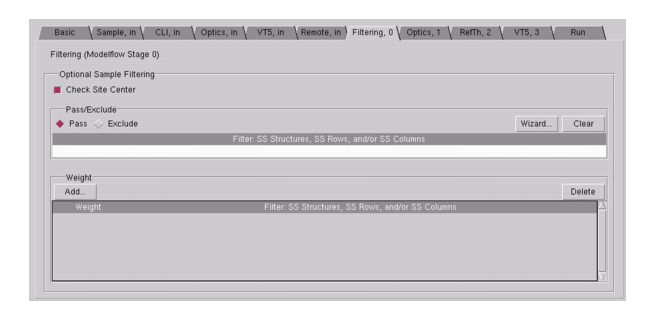

This optional
procedure describes how to use the Filtering, 0 tab
in VT5 Center.
The settings in this tab correspond to modelflow
stage 0, and apply to all the stages in the VT5 Center run. You
can also specify a subset of the filtered structures chosen in Stage
0 in any later stage.
Note: In most cases,
you should not set anything in this tab; by default, all structures are
included in optimization calculations, and weights can be set in
the Sample, in tab.
Procedure
- In VT5 Center, click the Filtering,
0 tab.
Figure 1. VT5 Center GUI (Filtering Tab)
- Select whether VT5 Center
checks if all sites are centered in the middle of the edge (Check
Site Center option); selecting this option causes VT5 Center to
halt the run if there are sites that are not centered.
- In the Pass/Exclude section
of the pane, you can select one of the modes:
Pass specified test
structures without optimizing them, if you want to focus on optimizing
other structures.
Exclude specified
test structures from optimization entirely, if you know that there
are test structures that will routinely fail, or are not used.
Click the Wizard button
and use the dialog box that appears to identify the structures to
be passed or excluded.
- In the lower half of the pane,
you can apply a special weighting factor to one or more structures
by clicking Add, then selecting the structure
name from the dialog box that appears.
By default,
all structures are given the same weight (1.0) unless otherwise
specified in the Sample, in tab.
- Proceed to the section “Setting Optimizations for the Optical Model”.